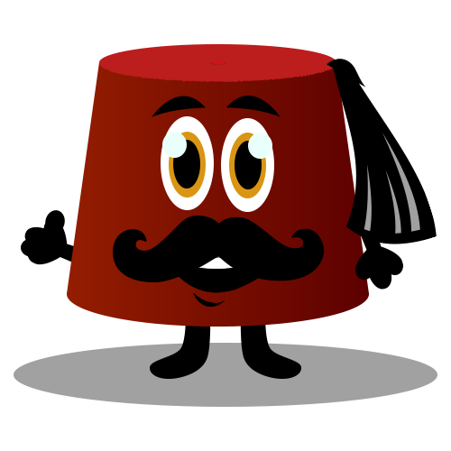

<!-- <ion-header>
  <ion-toolbar>
    <ion-title>
      Tab Two
    </ion-title>
  </ion-toolbar>
</ion-header> -->

<ion-content>

  <div class="friends-empty padding-top">
    <p class="caption">{{ 'CAPTION.game_friends_empty_caption' | translate }}</p>
    <button class="button button-violet button-common-80">{{ 'BUTTONS.game_friends_empty_random' | translate }}</button>
    <button id="tutorialTellFriendsId"
      class="button button-common-80 icon-left ion-social-facebook login-button">{{ 'BUTTONS.facebook_play_with_friends' | translate }}</button>
    
  </div>

</ion-content>